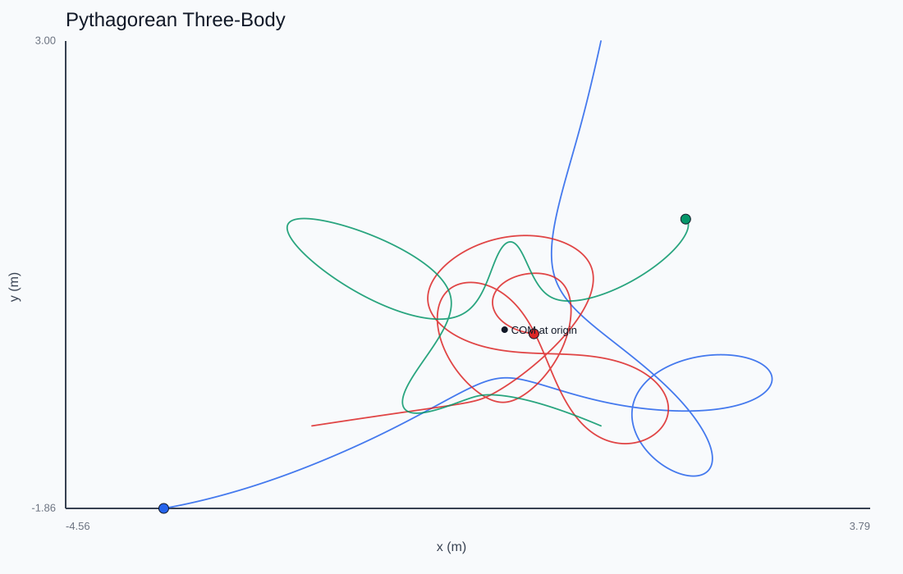
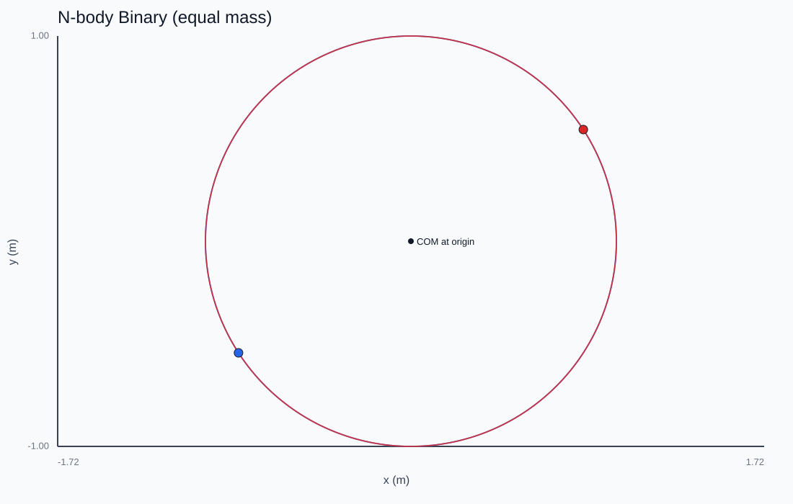
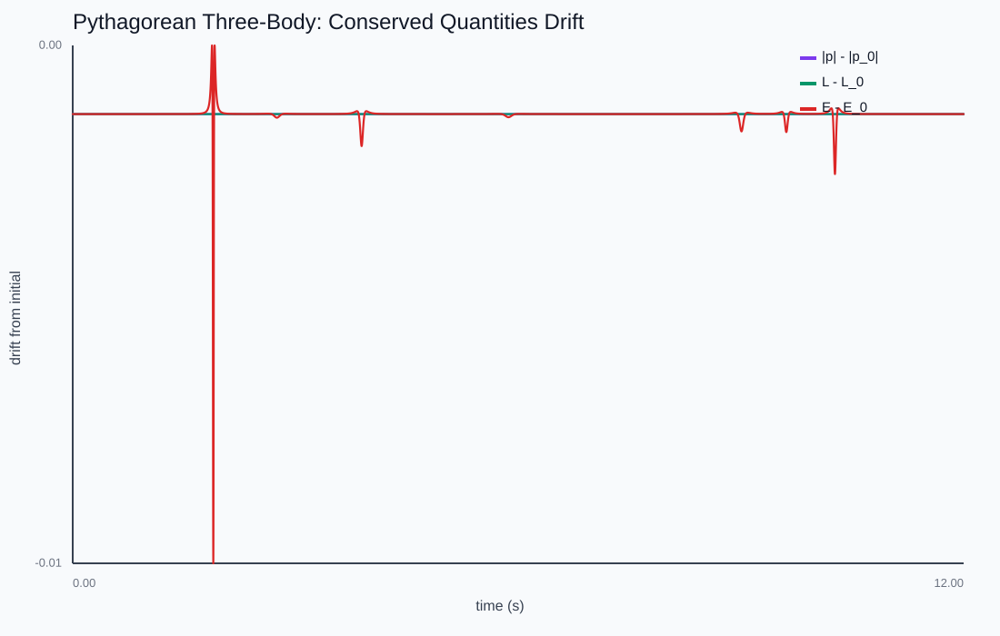

N-Body Gravity
When every force comes from the other bodies, what must the simulator preserve, and what does each integrator actually do to it?
The stable figure-eight three-body choreography, integrated live with velocity-Verlet — watch total momentum stay pinned. Switch to a binary, or click anywhere to drop in another body.

Newton's third law as a checksum
With no external force, total linear momentum is conserved exactly — and so it is by the discrete scheme too: every velocity kick sums to Σ Fᵢ dt = 0 by Newton's third law. Even RK4 holds it to ~1e-15. That makes momentum a far sharper correctness check than energy: any drift you see is roundoff, not algorithm.

Energy tells the real story
Energy and angular momentum are the interesting diagnostics. Energy drifts under explicit Euler, oscillates under semi-implicit Euler and Verlet, and slowly creeps under RK4. The binary visibly spirals outward under Euler while its momentum sits perfectly still — two invariants, two completely different verdicts on the same run.

Softening and the COM
A softening length keeps close approaches finite. Boost every body by the same velocity and the center of mass drifts at exactly that speed while the relative motion is untouched — Galilean invariance you can read off the plot.
This chapter is drawn from the physics-lab study notes and renders. The longer write-ups and project essays live on the blog.